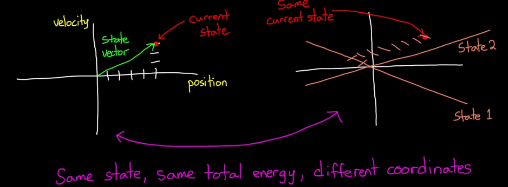
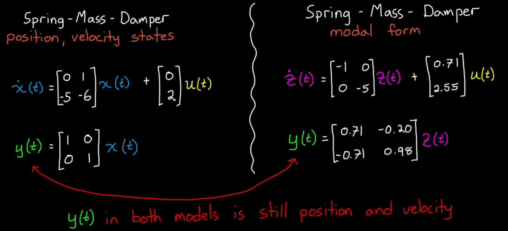
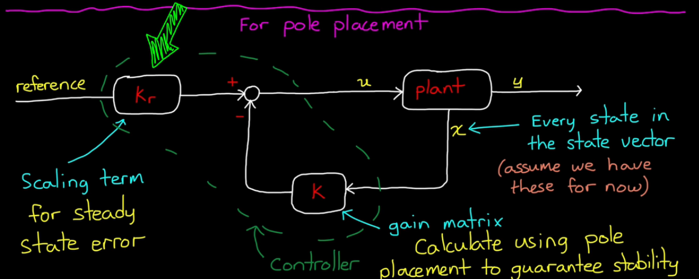
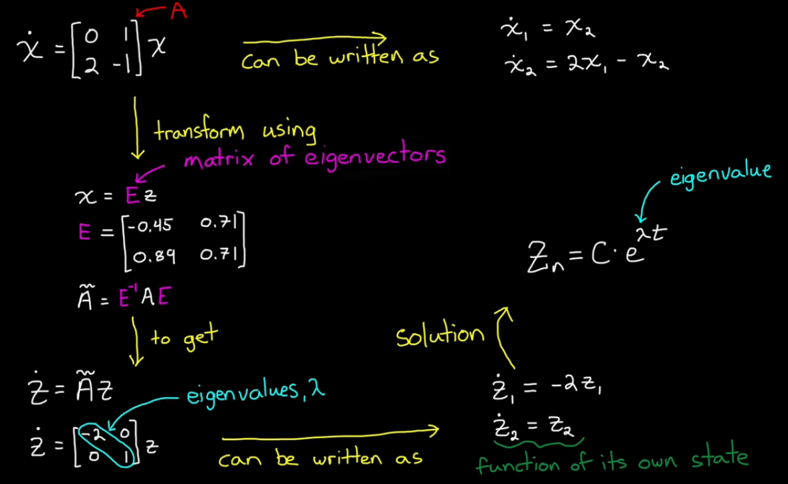
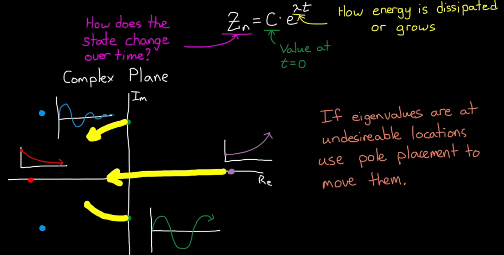
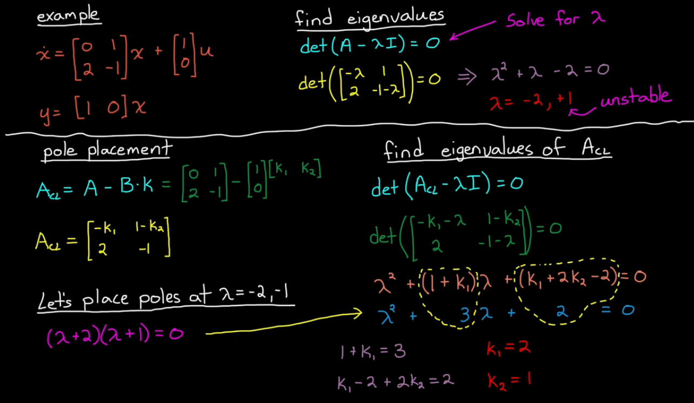

Dynamic system can be written in differential equations.
How the system is changing = f(current state)
Xd = f(X), actually defines stability for linear systems
Xd = f(X,u), where u = inputs, defines how a system changes
There are also control techniques that are built on state space models
(e.g. Kalman filter, LQR, robust, Model Predictive Control)
Xd(t) = [A]X(t) + [B]u(t)
y(t) = [C]X(t) + [D]u(t)
What are the state variables?
minimum set of variables that fully describe the system
For the simple string mass example, Initial Conditions:
Verify numbers of state variables with energy storage (Dr. Hill's explanation)
A dynamic system "stores" energy
(e.g. spring: potential energy, mass: kinetic energy)
(since damper does not store energy, adding damper: b is still a 2nd order system)
Why not two different states? Why position and velocity?
State variables are the coordinates within the state space.
So it can be changed!
We can describe the same state with any linearly-independant variables.

We do this often, for example diagonalizing the [A] matrix into so-called "modal form"

Pole Placement/Full State Feedback method

A controller has to modify [A] to change dynamics
eigenvalues(A) = poles of the system, where the location dictates stability
KEY to pole placement method:
generate the required close-loop stability, by moving the poles

Xd = [A]X -eigenvector transform-> Zd = [A_bar]Z,
(e.g. [A] = [[0 1],[2 -1]], [A_bar] = [[-2 0],[0 1]])
[A_bar] is diagonal matrix!, So
Z1d = -2Z1
Z2d = Z2
it becomes functions of its "own" state, decoupled!
And the solution becomes: Zn = C*exp(eigenvalue*t)

Review the block diagram of pole placement
u = r*kr - k*x
plug u into the state equation, we get
Xd = [A]x + [B](r*kr-k*x)
Xd = [A-B*k]X + [B]*r*kr
[A-B*k] is the closed-loop [A] matrix,
by design the k, we can move the eigenvalues of the closed-loop A matrix!

MATLAB example:
A = [0 1; 2 -1];
B = [1; 0];
C = [1 0];
D = 0
sys = ss(A, B, C, D)
E = eig(A), %shows E = 1,-2
% Desired closed loop eigenvalues
P = [-2 -1];
% Solve for K using pole placement
K = place(A, B, P);
% Check for closed loop eigenvalues
Acl = A-B*K;
Ecl = eig(Acl) %shows Ecl = -1, -2
% Create closed loop system & compare
syscl = ss(Acl, B, C, D)
step(sys,syscl)
The step response of sys is unstable as predicted
The step response of syscl is stable
However, it's not perfect, the steady state output is only 0.5
This is where the reference scaling term: kr comes in
If the steady state of step responce is only 0.5,
Why not just double the input by setting kr = 1/(steady state value)?
Solve for kr
kdc = dcgain(syscl) % kdc = 0.5
kr = 1/kdc
% Create scaled input closed loop system
syscl_scaled = ss(Acl, B*kr, C, D)
step(syscl_scaled)
Thinks